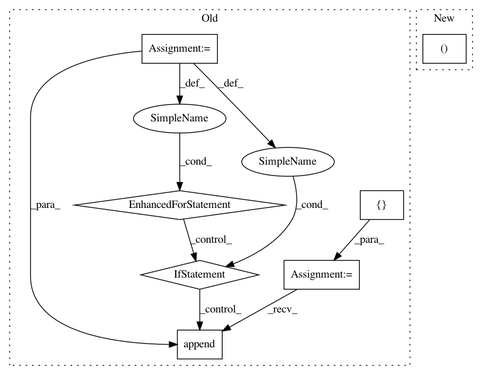

9b9e491bb00be66b732d2f44b3e4375206940e61,auto_ml/predictor.py,Predictor,make_sub_x_and_y_test,#Predictor#Any#Any#,332
Before Change
def make_sub_x_and_y_test(self, X_test, sub_name):
vals_to_ignore = set([None, float("Inf"), "ignore", "nan", "NaN", "Inf", "None", ""])
clean_X_test = []
clean_y = []
for row in X_test:
y_val = row.pop(sub_name, None)
if y_val not in vals_to_ignore and pd.notnull(y_val):
clean_X_test.append(row)
clean_y.append(y_val)
return clean_X_test, clean_y
def _train_subpredictor(self, sub_name, X_subpredictors, sub_model_names=None, sub_ml_analytics=False, sub_compute_power=5):
After Change
def make_sub_x_and_y_test(self, X_test, sub_name):
X_test = X_test[X_test.notnull()]
y = X_test.pop(sub_name)
return X_test, y
def _train_subpredictor(self, sub_name, X_subpredictors, sub_model_names=None, sub_ml_analytics=False, sub_compute_power=5):
In pattern: SUPERPATTERN
Frequency: 3
Non-data size: 7
Instances
Project Name: ClimbsRocks/auto_ml
Commit Name: 9b9e491bb00be66b732d2f44b3e4375206940e61
Time: 2016-10-19
Author: climbsbytes@gmail.com
File Name: auto_ml/predictor.py
Class Name: Predictor
Method Name: make_sub_x_and_y_test
Project Name: ray-project/ray
Commit Name: 06af62ba91f893e34e70c3aa1f272d758cd0c8bd
Time: 2020-09-03
Author: krfricke@users.noreply.github.com
File Name: python/ray/tune/suggest/variant_generator.py
Class Name:
Method Name: _generate_variants
Project Name: OpenNMT/OpenNMT-py
Commit Name: 63871d5ab3301d015805abddd8f4259680d6a24a
Time: 2017-09-21
Author: bpeters@coli.uni-saarland.de
File Name: translate.py
Class Name:
Method Name: main